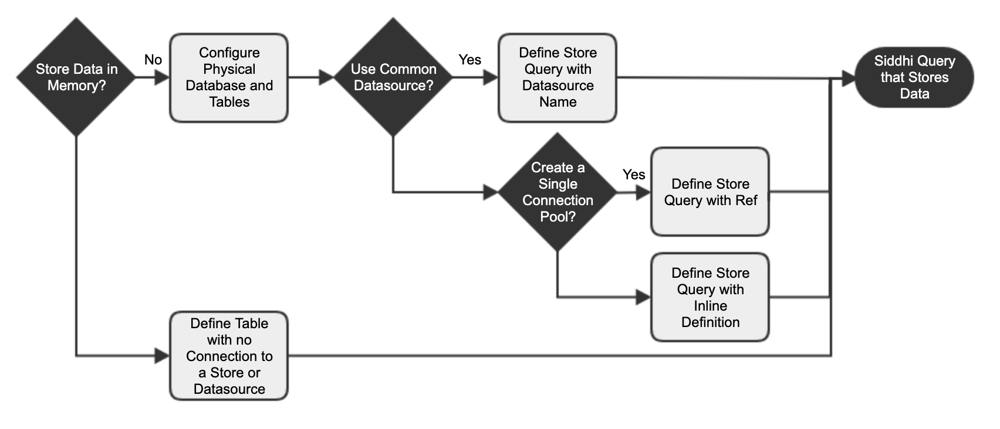

Storage Integration¶
Introduction¶
This section explains how to integrate data stores into Streaming Integration flows. The Streaming integrator can consume data from stores in a streaming manner as well as publish data into them. You can perform CRUD operations and Change Data Capture (CDC).
Configuring stores¶
You can store data in-memory or in a physical data store. In a production environment, it is recommended to store data in a physical store because data stored in-memory can be lost if a system failure occurs.

If you want to share a database across multiple Siddhi applications, you must define a data store in the <SI_HOME>/conf/server/deployment.yaml
file. If you want a single connection pool, you can define a store as a ref in the ref section of the <SI_HOME>/conf/server/deployment.yaml file. If you want to define a unique data store for your Siddhi application, you can define it inline.
To understand all three methods consider an example where a factory manager wants to store the purchase records of raw material supplies to be stored in order to able to check the availability of materials at any given time.
Storing data in existing data sources¶
To understand how to store data in existing data sources, follow the procedure below:
Info
You need to create a database and a table, and then connect it to the Streaming Integrator via a data source. For this example, you can create a database named FactoryMaterialDB as follows:
-
Download and install MySQL Server.
-
Download the MySQL JDBC driver.
-
Unzip the downloaded MySQL driver zipped archive, and copy the MySQL JDBC driver JAR (mysql-connector-java-x.x.xx-bin.jar) into the
/lib directory. -
Enter the following command in a terminal/command window, where username is the username you want to use to access the databases.
mysql -u username -p -
When prompted, specify the password you are using to access the databases with the username you specified.
-
Add the following configuration under the
Data Sources Configurationsection of the<SI_HOME>/conf/server/deployment.yamlfile.Info
You need to change the values for the username and password parameters to the username and password that you are using to access the MySQL database.
- name: FactoryMaterialDB description: Datasource used for Factory Supply Records jndiConfig: name: jdbc/FactoryMaterialDB useJndiReference: true definition: type: RDBMS configuration: jdbcUrl: 'jdbc:mysql://localhost:3306/FactoryMaterialDB' username: root password: root driverClassName: com.mysql.jdbc.Driver maxPoolSize: 50 idleTimeout: 60000 connectionTestQuery: SELECT 1 validationTimeout: 30000 isAutoCommit: false -
To create a database table named
FactoryMaterialDB, issue the following commands from the terminal.mysql> create database FactoryMaterialDB;
mysql> use FactoryMaterialDB;
mysql> source <SI_HOME>/wso2/editor/dbscripts/metrics/mysql.sql;
mysql> grant all on FactoryMaterialDB.* TO username@localhost identified by "password";
-
Start creating a new Siddhi application. You can name it
ShipmentHistoryAppFor instructions, see Creating a Siddhi Application.@App:name('ShipmentHistory'); -
First, define an input stream to capture the data that you need to store as follows.
@source(type = 'http', @map(type = 'json')) define stream RawMaterialStream(transRef long, material string, supplier string, amount double);Here, each event representing a material shipment transaction is received via the
httptransport and in JSON format. This is specified via the source annotation. For more information about consuming data via sources, see the Consuming Data guide. -
Now let's define the table in which you are storing the data as follows.
define table ShipmentDetails(transRef long, material string, supplier string, amount double); -
To save the data in the required database, connect the table you defined to the datasource that you previously created.
@Store(type='rdbms', datasource='FactoryMaterialDB')@PrimaryKey("transRef") define table ShipmentDetails(transRef long, material string, supplier string, amount double); -
To store the information arriving at the
RawMaterialStreamstream to theShipmentDetailstable, write a Siddhi query as follows:-
To specify that events to be stored are taken from the
RawMaterialStreaminput stream, add thefromclause as follows.from RawMaterialStream -
To derive the exact attribute names with which the records are stored in the table, add the
selectstatement as follows.select transRef, material, supplier -
If a record from the stream already exists in a the
ShipmentDetailstable, it should be updated with the latest information from the stream. If it does not already exist, it must be inserted as a new record. To specify this, add anupdate and insertclause as follows.update or insert into ShipmentDetails on ShipmentDetails.transRef == transRef;
Each record is identified by the transaction reference which is the primary key. Therefore, the condition
on ShipmentDetails.transRef == transRefmeans that if a record with the same value for thetransRefattribute exists in the table, the record from the stream updates it. If not, the record from the stream is inserted as a new record. -
Referring to externally defined stores¶
To understand how to refer to am externally defined store, follow the procedure below:
Before you begin:
You need to create a database and a table, and then define an external store referring to it as follows.
-
Download and install MySQL Server.
-
Download the MySQL JDBC driver.
-
Unzip the downloaded MySQL driver zipped archive, and copy the MySQL JDBC driver JAR (mysql-connector-java-x.x.xx-bin.jar) into the
<SI_HOME>/libdirectory. -
Enter the following command in a terminal/command window, where username is the username you want to use to access the databases.
mysql -u username -p -
When prompted, specify the password you are using to access the databases with the username you specified.
-
In the
<SI_HOME>/conf/server/deployment.yamlfile, add a subsection for refs and connect to the database you created as shown below.siddhi: refs: - ref: name: 'FactoryMaterial' type: 'rdbms' properties: jdbc.url: ''jdbc:mysql://localhost:3306/FactoryMaterialDB'' username: '<YOUR_USERNAME>' password: '<YOUR_PASSWORD>' field.length='currentTime:100' jdbc.driver.name: 'com.mysql.jdbc.Driver' -
To create a database table named
FactoryMaterialDB, issue the following commands from the terminal.mysql> create database FactoryMaterialDB;
mysql> use FactoryMaterialDB;
mysql> source <SI_HOME>/wso2/editor/dbscripts/metrics/mysql.sql;
mysql> grant all on FactoryMaterialDB.* TO username@localhost identified by "password";
-
Start creating a new Siddhi application. You can name it
ShipmentHistoryAppFor instructions, see Creating a Siddhi Application.@App:name('ShipmentHistory'); -
First, define an input stream to capture the data that you need to store as follows.
@source(type = 'http', @map(type = 'json')) define stream RawMaterialStream(transRef long, material string, supplier string, amount double);Here, each event representing a material shipment transaction is received via the
httptransport and in JSON format. This is specified via the source annotation. For more information about consuming data via sources, see the Consuming Data guide. -
Now let's define the table in which you are storing the data as follows.
define table ShipmentDetails(transRef long, material string, supplier string, amount double); -
To save the data in the required database, connect the table you defined to the ref that you previously created.
@Store(ref='FactoryMaterial') @PrimaryKey('transRef') define table ShipmentDetails(transRef long, material string, supplier string, amount double);Here, you are referring to theFactoryMaterialexternal store you configured and specifying thetransRefattribute as the primary key. -
To store the information arriving at the
RawMaterialStreamstream to theShipmentDetailstable, write a Siddhi query as follows:-
To specify that events to be stored are taken from the
RawMaterialStreaminput stream, add thefromclause as follows.from RawMaterialStream -
To derive the exact attribute names with which the records are stored in the table, add the
selectstatement as follows.select transRef, material, supplier -
If a record from the stream already exists in a the
ShipmentDetailstable, it should be updated with the latest information from the stream. If it does not already exist, it must be inserted as a new record. To specify this, add anupdate and insertclause as follows.update or insert into ShipmentDetails on ShipmentDetails.transRef == transRef;
Each record is identified by the transaction reference which is the primary key. Therefore, the condition
on ShipmentDetails.transRef == transRefmeans that if a record with the same value for thetransRefattribute exists in the table, the record from the stream updates it. If not, the record from the stream is inserted as a new record. -
Configuring data stores inline¶
To understand how to define a store inline, follow the procedure below:
Before you begin
You need to create a database and a table, and then define an external store referring to it as follows.
-
Download and install MySQL Server.
-
Download the MySQL JDBC driver.
-
Unzip the downloaded MySQL driver zipped archive, and copy the MySQL JDBC driver JAR (mysql-connector-java-x.x.xx-bin.jar) into the
/lib directory. -
Enter the following command in a terminal/command window, where username is the username you want to use to access the databases.
mysql -u username -p -
When prompted, specify the password you are using to access the databases with the username you specified.
-
To create a database table named
FactoryMaterialDB, issue the following commands from the terminal.mysql> create database FactoryMaterialDB;
mysql> use FactoryMaterialDB;
mysql> source <SI_HOME>/wso2/editor/dbscripts/metrics/mysql.sql;
mysql> grant all on FactoryMaterialDB.* TO username@localhost identified by "password";
-
Start creating a new Siddhi application. You can name it
ShipmentHistoryAppFor instructions, see Creating a Siddhi Application.@App:name('ShipmentHistory'); -
First, define an input stream to capture the data that you need to store as follows.
@source(type = 'http', @map(type = 'json')) define stream RawMaterialStream(transRef long, material string, supplier string, amount double);Here, each event representing a material shipment transaction is received via the
httptransport and in JSON format. This is specified via the source annotation. For more information about consuming data via sources, see the Consuming Data guide. -
Now let's define the table in which you are storing the data as follows.
define table ShipmentDetails(transRef long, material string, supplier string, amount double); -
To save the data in the required database, connect an inline store definition to the table definition via the
@storeannotation as follows@primaryKey('transRef') @index('supplier') @store(type='rdbms', jdbc.url="jdbc:mysql://localhost:3306/FactoryMaterialDB, username="<YOUR_USERNAME>", password="<YOUR_PASSWORD>" , jdbc.driver.name="com.mysql.jdbc.Driver") define table ShipmentDetails(transRef long, material string, supplier string, amount double);Here, thejdbc.urlparameter connects theShipmentDetailstable to theFactoryMaterialDBdatabase that you previously created. The value for thetransRefparameter is unique for each purchase event. Therefore, it is specified as the primary key for the table. The records are indexed by the supplier. -
To store the information arriving at the
RawMaterialStreamstream to theShipmentDetailstable, write a Siddhi query as follows:-
To specify that events to be stored are taken from the
RawMaterialStreaminput stream, add thefromclause as follows.from RawMaterialStream -
To derive the exact attribute names with which the records are stored in the table, add the
selectstatement as follows.select transRef, material, supplier -
If a record from the stream already exists in a the
ShipmentDetailstable, it should be updated with the latest information from the stream. If it does not already exist, it must be inserted as a new record. To specify this, add anupdate and insertclause as follows.update or insert into ShipmentDetails on ShipmentDetails.transRef == transRef;
Each record is identified by the transaction reference which is the primary key. Therefore, the condition
on ShipmentDetails.transRef == transRefmeans that if a record with the same value for thetransRefattribute exists in the table, the record from the stream updates it. If not, the record from the stream is inserted as a new record. -
Performing CRUD operations¶
Performing CRUD operations via streams¶
If you tried out the example in the previous sections of this guide, you have already performed an update or insert operation
via streams when you updated or inserted a record relating to the purchase records into the ShipmentDetails table. In
this section, you can try more CRUD operations via streams as follows:
- If you want to insert all the records from the
RawMaterialStreamstream to theShipmentDetailstable, you can write the Siddhi query as follows.from RawMaterialStream select * insert into ShipmentDetails -
If you want to search for all the records by a specific supplier, you can write the Siddhi query as follows.
from RawMaterialStream on supplier == 'Lakspur landing' in ShipmentDetails select * insert into SearchResultsStreamHere, you search for records by entering the search condition in the
fromclause and directing the filtered results into an output stream namedSearchResultsStream. -
If you want to delete all the records for a specific material, you can write the Siddhi query as follows:
from DeleteMaterialStream on material == 'honey' in ShipmentDetails select * delete ShipmentDeails on ShipmentDetails.material == matarial;
Performing CRUD operations via REST API¶
This section explains how to use REST API to perform the same CRUD operations that you previously performed via streams.
Before you begin:
The Siddhi store query endpoint can be configured as follows:
- In the siddhi.stores.query.api: section of the
<SI_HOME>/conf/server/deployment.yamlfile, configure the following properties. The following is a sample configuration with default values.siddhi.stores.query.api: transportProperties: - name: "server.bootstrap.socket.timeout" value: 60 - name: "client.bootstrap.socket.timeout" value: 60 - name: "latency.metrics.enabled" value: true listenerConfigurations: - id: "default" host: "0.0.0.0" port: 7070 - id: "msf4j-https" host: "0.0.0.0" port: 7443 scheme: https keyStoreFile: "${carbon.home}/resources/security/wso2carbon.jks" keyStorePassword: wso2carbon certPass: wso2carbon- transport properties
server.bootstrap.socket.timeout: The number of seconds after which the connection socket of the bootstrap server times out.client.bootstrap.socket.timeout: The number of seconds after which the connection socket of the bootstrap server times out.latency.metrics.enabled: If this is set totrue, the latency metrics are enabled and logged for the HTTP transport.- listenerConfigurations: Multiple listeners can be configured as shown in the above sample.
id: A unique ID for the listener.host: The host of the listener.port: The port of the listener.scheme: This specifies whether the transport scheme is HTTP or HTTPS.keyStoreFile: If the transport scheme is HTTPS, this parameter specifies the path to the key store file.keyStorePassword: If the transport scheme is HTTPS, this parameter specifies the key store password.
- In the
siddhi.stores.query.api:section of the<SI_HOME>/conf/server/deployment.yamlfile, the following properties are configured by default:
The same parameter descriptions provided for thesiddhi.stores.query.api: transportProperties: - name: "server.bootstrap.socket.timeout" value: 60 - name: "client.bootstrap.socket.timeout" value: 60 - name: "latency.metrics.enabled" value: true listenerConfigurations: - id: "default" host: "0.0.0.0" port: 7370<SI_HOME>/conf/server/deployment.yamlfile apply to this configuration.
Inserting records¶
This allows you to insert a new record to the table with the attribute values you define in the select section.
Syntax
select <attribute name>, <attribute name>, ...
insert into <table>;Sample CURL command
The following CURL command submits a query that inserts a new record with the specified attribute values to a table named RoomOccupancyTable.
-
For Streaming Integrator server:
curl -X POST https://localhost:7443/stores/query -H "content-type: application/json" -u "admin:admin" -d '{"appName" : "RoomService", "query" : "select 10 as roomNo, 2 as people insert into RoomOccupancyTable;" }' -k -
For Streaming Integrator Tooling:
curl -X POST http://localhost:7370/stores/query -H "content-type: application/json" -u "admin:admin" -d '{"appName" : "RoomService", "query" : "select 10 as roomNo, 2 as people insert into RoomOccupancyTable;" }' -k
Retrieving records¶
This is the store query to retrieve records from a table or a window.
Retrieving records from tables and windows¶
Syntax
from <table/window>
<on condition>?
select <attribute name>, <attribute name>, ...
<group by>?
<having>?
<order by>?
<limit>?Sample CURL command
The following CURL command submits a query that retrieves room numbers and types of the rooms starting from room no 10, from a table named roomTypeTable.
The roomTypeTable table must be defined in the RoomService Siddhi application.
-
For Streaming Integrator server:
curl -X POST https://localhost:7443/stores/query -H "content-type: application/json" -u "admin:admin" -d '{"appName" : "RoomService", "query" : "from roomTypeTable on roomNo >= 10 select roomNo, type; " }' -k -
For Streaming Integrator Tooling:
curl -X POST http://localhost:7370/stores/query -H "content-type: application/json" -u "admin:admin" -d '{"appName" : "RoomService", "query" : "from roomTypeTable on roomNo >= 10 select roomNo, type; " }' -k
Sample response
The following is a sample response to the sample CURL command given above.
{"records":[
[10,"single"],
[11, "triple"],
[12, "double"]
]}Retrieving records from aggregations¶
This is the store query to retrieve records from an aggregation.
Syntax
from <aggregation>
<on condition>?
within <time range>
per <time granularity>
select <attribute name>, <attribute name>, ...
<groupby>?
<having>?
<order by>?
<limit>?Sample CURL command
The following CURL command submits a query that retrieves average price of a stock.
- For Streaming Integrator server:
curl -X POST https://localhost:7443/stores/query -H "content-type: application/json" -u "admin:admin"
-d '{"appName" : "StockAggregationAnalysis", "query" : "from TradeAggregation on symbol=='FB' within '2018-**-** +05:00' per 'hours' select AGG_TIMESTAMP, symbol, total, avgPrice" }' -k- For Streaming Integrator Tooling:
curl -X POST http://localhost:7370/stores/query -H "content-type: application/json" -u "admin:admin"
-d '{"appName" : "StockAggregationAnalysis", "query" : "from TradeAggregation on symbol=='FB' within '2018-**-** +05:00' per 'hours' select AGG_TIMESTAMP, symbol, total, avgPrice" }' -kSample response
The following is a sample response to the sample CURL command given above.
{"records":[
[1531180800, 'FB', 10000.0, 250.0],
[1531184400, 'FB', 11000.0, 260.0],
[1531188000, 'FB', 9000.0, 240.0]
]}Updating records¶
This store query updates selected attributes stored in a specific table based on a given condition.
Syntax
select <attribute name>, <attribute name>, ...?
update <table>
set <table>.<attribute name> = (<attribute name>|<expression>)?, <table>.<attribute name> = (<attribute name>|<expression>)?, ...
on <condition>Sample CURL command
The following CURL command updates the room occupancy for selected records in the table named RoomOccupancyTable. The records that are updated are ones of which the roon number is greater than 10. The room occupancy is updated by adding 1 to the existing value of the people attribute.
- For Streaming Integrator server:
curl -X POST https://localhost:7443/stores/query -H "content-type: application/json" -u "admin:admin" -d '{"appName" : "RoomService", "query" : "select 10 as roomNumber, 1 as arrival update RoomTypeTable set RoomTypeTable.people = RoomTypeTable.people + arrival on RoomTypeTable.roomNo == roomNumber;" }' -k- For Streaming Integrator Tooling:
curl -X POST http://localhost:7370/stores/query -H "content-type: application/json" -u "admin:admin" -d '{"appName" : "RoomService", "query" : "select 10 as roomNumber, 1 as arrival update RoomTypeTable set RoomTypeTable.people = RoomTypeTable.people + arrival on RoomTypeTable.roomNo == roomNumber;" }' -kDeleting records¶
This store query deletes selected records from a specified table.
Syntax
<select>?
delete <table>
on <conditional expresssion>Sample CURL command
The following CURL command submits a query that deletes a record in the table named RoomTypeTable if it has value for the roomNo attribute that matches the value for the roomNumber attribute of the selection that has 10 as the actual value.
- For Streaming Integrator server:
curl -X POST https://localhost:7443/stores/query -H "content-type: application/json" -u "admin:admin"
-d '{"appName" : "RoomService", "query" : "select 10 as roomNumber
delete RoomTypeTable on RoomTypeTable.roomNo == roomNumber;;" }' -k- For Streaming Integrator Tooling:
curl -X POST http://localhost:7370/stores/query -H "content-type: application/json" -u "admin:admin"
-d '{"appName" : "RoomService", "query" : "select 10 as roomNumber
delete RoomTypeTable on RoomTypeTable.roomNo == roomNumber;;" }' -kInserting/updating records¶
Syntax
select <attribute name>, <attribute name>, ...
update or insert into <table>
set <table>.<attribute name> = <expression>, <table>.<attribute name> = <expression>, ...
on <condition>Sample CURL command
The following CURL command submits a query that attempts to update selected records in the RoomAssigneeTable table. The records that are selected to be updated are ones with room numbers that match the numbers specified in the select clause. If matching records are not found, it inserts a new record with the values provided in the select clause.
- For Streaming Integrator server:
curl -X POST https://localhost:7443/stores/query -H "content-type: application/json" -u "admin:admin" -d '{"appName" : "RoomService", "query" : "select 10 as roomNo, "single" as type, "abc" as assignee update or insert into RoomAssigneeTable set RoomAssigneeTable.assignee = assignee on RoomAssigneeTable.roomNo == roomNo;" }' -k- For Streaming Integrator Tooling:
curl -X POST http://localhost:7370/stores/query -H "content-type: application/json" -u "admin:admin" -d '{"appName" : "RoomService", "query" : "select 10 as roomNo, "single" as type, "abc" as assignee update or insert into RoomAssigneeTable set RoomAssigneeTable.assignee = assignee on RoomAssigneeTable.roomNo == roomNo;" }' -kFor more information, see Siddhi Query Guide - Store Query.
Manupulating data in multiple tables¶
The Streaming Integrator allows you to perform CRUD operations (i.e., inserting updating and deleting data) and retrieval queries for multiple normalized tables within a single data store. This is supported via the siddhi-store-rdbms extension.
Performing CRUD operations for multiple tables
In order to perform CRUD operations, the system parameter named perform.CRUD.operations needs to be set to true in the deployment.yaml file.
The syntax for a Siddhi query to perform a CRUD operation in multiple tables is as follows.
from TriggerStream#rdbms:cud(<STRING> datasource.name, <STRING> query)
select numRecords
insert into OutputStream;e.g., If you need to change the details of a customer in customer details table connected to a data source named, SAMPLE_DB a Siddhi query can be written as follows.
from Trigger Stream#rdbms:cud('SAMPLE_DB', 'UPDATE Customers ON CUSTOMERS SET ContactName='Alfred Schmidt', City='Frankfurt' WHERE CustomerID=1;')
select numRecords
insert into OutputStreamRetrieving data from multiple tables
In order to retrieve information from multiple tables in a data store, the syntax is as follows:
from TriggerStream#rdbms:query(<STRING> dataource.name, <STRING> query, <STRING> stream definition)
select <attributes>
insert into OutputStreame.g., If you need to find matching records in both customer and orders table based on orderId and customerId in the SAMPLE_DB database, a Siddhi query can be written as follows.
from TriggerStream#rdbms:query('SAMPLE_DB', 'SELECT Orders.OrderID, Customers.CustomerName, Orders.OrderDate FROM Orders INNER JOIN Customers ON Orders.CustomerID=Customers.CustomerID', 'orderId string, customerName string, orderDate string')
select orderId, customerName, orderData
insert into OutputStream;